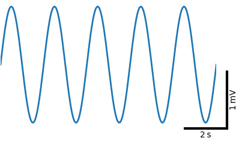
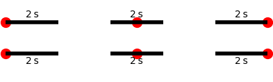
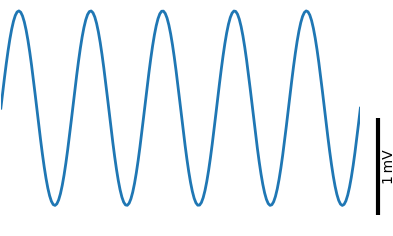
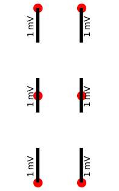
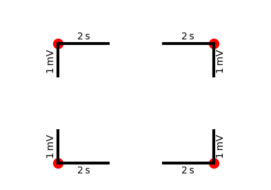
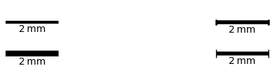

Scalebars module
Scalebars are an alternative to xticks and yticks. They visualize scales by the length of a bar.

ax.scalebars(1.05, 0.0, 2, 1, 's', 'mV', ha='right', va='bottom')
Do not use scalebars if a specific value on the axis (most likely zero) has a special meaning!
The scalebar module installs the three functions
xscalebar()yscalebar()scalebars()
on matplotlib axes for drawing and annotating horizontal or vertical scalebars, or both.
import matplotlib.pyplot as plt
from plottools.scalebars import scalebar_params
fig, ax = plt.subplots()
X Scalebars
xscalebar() draws and annotates a horizontal scalebar, visualizing
the scale of the x-axis.

ax.xscalebar(1.0, 0.0, 2, 's', ha='right', va='bottom')
The first two arguments of the scalebar functions set the anchor point on which the scalebar is positioned. The scalebar position is given in relative coordinates of the axes (ranging from 0 to 1).
For horizontal scalebars, ha (horizontal alignment) determines
whether the anchor is on the 'left', 'center', or 'right' of the
scalebar. The vertical alignment (va) determines whether the
annotation is on top ('top') or below ('bottom') the
scalebar. Horizontal alignment of the annotation text relative to the
scalebar (hat) can be 'center' (default), 'left' or 'right'. In the
figure the position of the scalebar, its anchor point, is shown as a
red circle.

ax.xscalebar(0.0, 0.9, 2, 's', ha='left', va='top')
ax.xscalebar(0.5, 0.9, 2, 's', ha='center', va='top')
ax.xscalebar(1.0, 0.9, 2, 's', ha='right', va='top')
ax.xscalebar(0.0, 0.5, 2, 's', ha='left', va='bottom')
ax.xscalebar(0.5, 0.5, 2, 's', ha='center', va='bottom')
ax.xscalebar(1.0, 0.5, 2, 's', ha='right', va='bottom')
ax.xscalebar(0.0, 0.1, 2, 's', ha='left', va='bottom', hat='left')
ax.xscalebar(0.5, 0.1, 2, 's', ha='center', va='bottom', hat='center')
ax.xscalebar(1.0, 0.1, 2, 's', ha='right', va='bottom', hat='right')
The third argument sets the length of the scale bar in data coordinates of the x-axis, followed by a string setting the unit of the scale.
Y Scalebars
yscalebar() draws and annotates a vertical scalebar, visualizing the
scale of the y-axis.

ax.yscalebar(1.05, 0.0, 1, 'mV', ha='right', va='bottom')
For vertical scalebars, va (vertical alignment) determines whether
the anchor is on the 'top', 'center', or 'bottom' of the scalebar. The
horizontal alignment (ha) determines whether the annotation is to
the 'left' or to the 'right' of the scale bar. Vertical alignment of
the annotation text relative to the scalebar (vat) can be 'center'
(default), 'top' or 'bottom'. In the figure the position of the
scalebar, the anchor point, is shown as a red circle.

ax.yscalebar(0.3, 1.0, 1, 'mV', ha='left', va='top')
ax.yscalebar(0.3, 0.5, 1, 'mV', ha='left', va='center')
ax.yscalebar(0.3, 0.0, 1, 'mV', ha='left', va='bottom')
ax.yscalebar(0.7, 1.0, 1, 'mV', ha='right', va='top')
ax.yscalebar(0.7, 0.5, 1, 'mV', ha='right', va='center')
ax.yscalebar(0.7, 0.0, 1, 'mV', ha='right', va='bottom')
X-Y Scalebars
scalebars() draws and annotates both a horizontal and a vertical
scalebar, visualizing the scale of the x- and the y-axis. Horizontal
alignment (ha) determines whether the anchor point and the vertical
scalebar is on the 'left' or on the 'right' of the horizontal
scalebar. Vertical alignment (va) determines whether the anchor
point and the horizontal scalebar are at the 'top' or 'bottom' of the
vertical scalebar. Again, hat and vat allow to control the
position of the annotation texts relative to the scalebars. In the
figure the position of the scalebar, the anchor point, is shown as a
red circle.

ax.scalebars(0.2, 0.8, 2, 1, 's', 'mV', ha='left', va='top')
ax.scalebars(0.8, 0.8, 2, 1, 's', 'mV', ha='right', va='top')
ax.scalebars(0.2, 0.1, 2, 1, 's', 'mV', ha='left', va='bottom')
ax.scalebars(0.8, 0.1, 2, 1, 's', 'mV', ha='right', va='bottom')
Styles
The line width and the color of the scalebar can be set by the lw
and color keyword arguments.
The horizontal and vertical scalebars can have in addition start and
stop markers. These are lines perpendicular to the scalebar line. Half
of their length is set by capsize and their width by clw.

ax.xscalebar(0.0, 0.8, 2, 'mm', ha='left', va='bottom', lw=3)
ax.xscalebar(0.0, 0.3, 2, 'mm', ha='left', va='bottom', lw=6)
ax.xscalebar(1.0, 0.8, 2, 'mm', ha='right', va='bottom', lw=4, capsize=4, clw=2)
ax.xscalebar(1.0, 0.3, 2, 'mm', ha='right', va='bottom', lw=4, capsize=6, clw=1)
Import and use the scalebar_params() function to modify default rc settings
defining the style of the scalebars:
scalebar_params(format_large='%.0f', format_small='%.1f', lw=3, capsize=0, clw=0.5)
Ideally you use the scalebar functions without specifying the lw,
color, capsize, clw, and font arguments and control them by a
central call to scalebar_params().